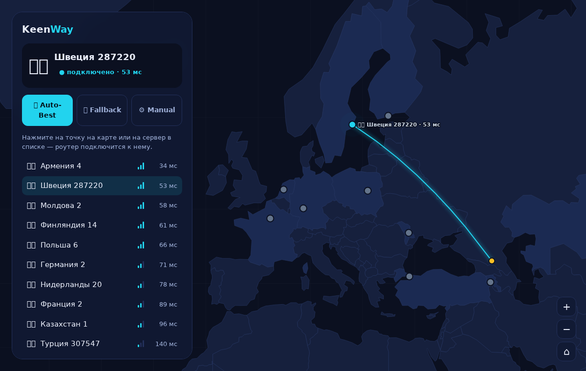
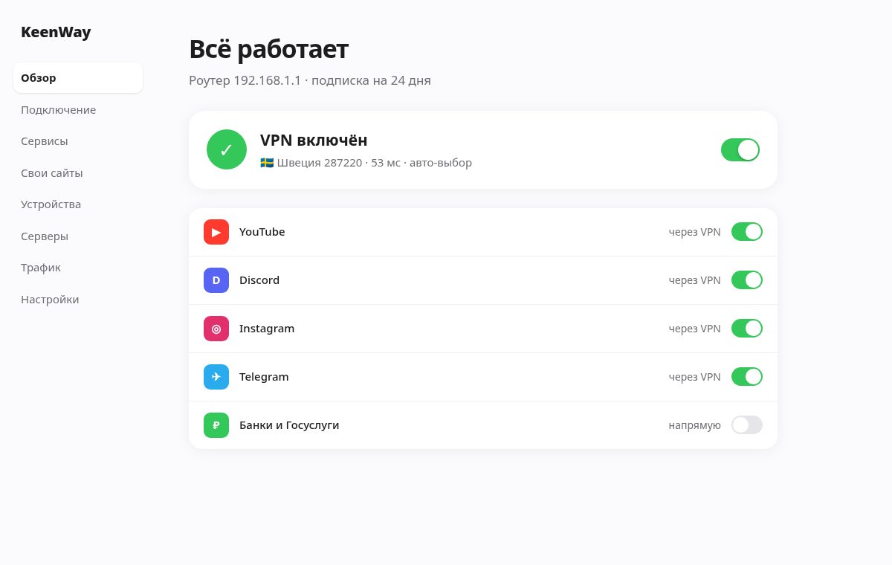
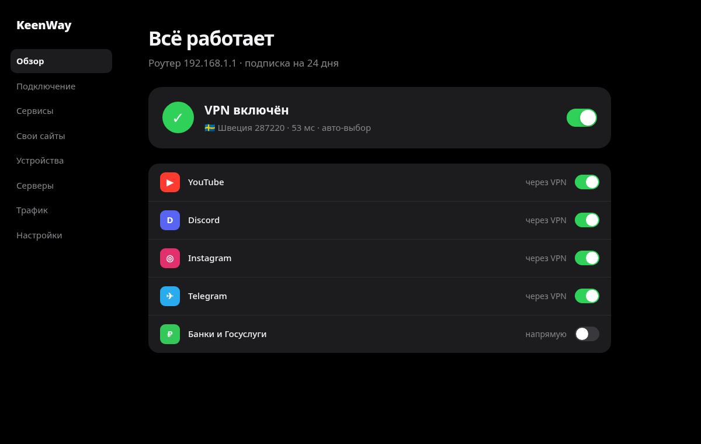
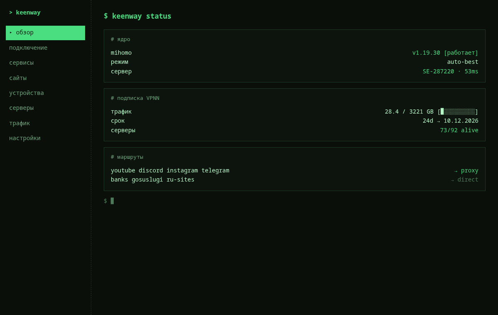

KeenWay — выбранные темы
Эти 5 пойдут в KeenWay как темы с переключателем в Настройках. По умолчанию — A «Неон».

A · Неон — по умолчанию
Тёмный, градиенты, светящийся статус, кнопка 🚀 Auto-Best с залитым фоном.

R · Карта
Настоящая карта, точки серверов, клик по точке подключает. Колесо — зум.

B · Светлый минимализм
Как настройки iPhone, переключатели у сервисов.

B2 · Чёрный минимализм
Тот же минимализм, но чёрный, как тёмная тема iPhone.

D · Терминал
Зелёный на чёрном, моноширинный, под ИБ.